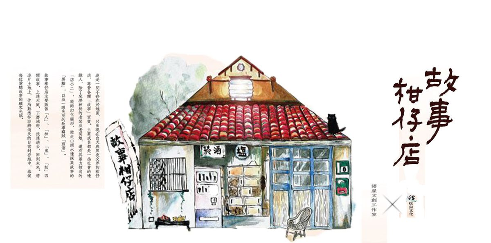

靈行者

♦靈行者♦
序章〈收屍者〉
1.
「喂？你有記得把我的八字拿給你媽了嗎？……上次不是說要合日子？結婚的日子呀！你要記得喔……」
掛上電話，忠仔抓抓不到三十歲便日漸稀疏的頭髮，喝了一大口手中的蘋果西打，從隨身的布包摸出香菸點燃，實在不懂淑芬為什麼力排眾議嫁給他。
入夜的馬路偶爾有車輛滑過，留下一串廢氣。如果淑芬知道他正想著另一個女人，可會氣到不嫁？
似乎也不必。畢竟他想的，是一具破碎的女屍。
那是他今天稍早處理的案件。
在海邊被暱稱為肉粽的防波提中，卡著一條泡爛浮腫的腿。
經過一下午的搜尋，其他部位都找齊了，唯獨一隻左手始終找不着。
早已看慣這種事，但那隻手卻莫名浮現在忠仔腦海，輕輕柔柔揮着。
工作結束的他一反常態沒有回家倒頭大睡，反而手插口袋，在燈火通明的街上慢悠悠走著，邊走邊玩個不會膩的遊戲，遇見岔路就右轉，管他是什麼路什麼街。
當他鑽進一條小巷時，牆上赫然映著一個異常巨大、似乎渾身長滿觸角的影子，正以古怪的節奏扭曲舞動緩慢逼近。
忠仔屏住呼吸，一動也不敢動，差點捏扁手中鋁罐，這才發現迎面走來的不過是個臉色蠟黃的瘦弱女子，怪異影子消失無蹤，女子看也不看忠仔，逕自盯著前方，歪頭念念有詞地往前走去。
旁邊住家窗戶透出慘白燈光，忠仔揉揉眼睛，視力愈來愈差，真的該找時間去檢查一下了。
「咦？」鑽出巷子，路邊大多數商店紛紛拉下鐵捲門，專作宵夜場的麵攤佇立在街角蒸騰出熱氣白煙，忠仔這才意識到時間晚了。
昏暗的路燈下，遠遠一輛腳踏車左搖右擺騎了過來，忠仔莫名覺得那輛腳踏車衝著他來，他左右張望，像是發現了什麼，加速邁開步伐往右前方的天橋邁進，拖著他略跛的腳，走起路來一晃一晃，胸前艷紅色的香火袋隨之晃蕩著。
他窩進天橋下的縫隙坐著，從小他就喜歡這種窄仄的空間，例如沙發下、冰箱與牆的夾縫，童年跟母親睡覺時，他也習慣將手塞進兩顆枕頭的縫隙
忠仔無意識往布包裡掏，掏出一部卡帶式錄放音機。
他按下play鍵，將錄放音機貼近耳朵，只聽見嗤嗤作響的雜訊，空白錄音帶規律無意義的轉動著。
忠仔用食指敲敲錄放音機的外殻，試圖回想這部機器與錄音帶究竟跟了他多久，他總想要錄一些音樂或聲響，但至今那捲錄音帶播放出來仍是無止息的沈默。
今夜又是燠熱無風的夜，忠仔仰頭咕嚕咕嚕喝光手中的蘋果西打。
2.
天色完全亮起之前，忠仔沿著人行道一路晃蕩，穿過還未甦醒徹底的市場，拐進一條巷弄，在一棟透天厝前往布包裡掏出鑰匙。
「夭壽哦，忙到這時！要吃粥嗎？我剛煮好。」穿著棉質睡衣的阿雀姨聽到聲響，從廚房探出頭來，飄出一陣鹹香。
忠仔抓抓頭，「免啦，妳吃就好，我先上去睡覺。」
「少年人老是當暗光鳥，呷老你就知道苦啦！」阿雀姨突然喊，「對了，你媽昨晚有打電話來，說你手機又關機啦！欸，你辦手機是辦笑虧的？時不時你媽都找無你。」
忠仔掏出手機，又沒電了。他本來就不習慣講電話，淑芬硬是買了支手機給他，「新上市的耶，NOKIA的3310唷！」
他想起淑芬獻寶似的開心臉龐，有點愧疚地抓抓頭，隨口問道：「我媽有說找我什麼事嗎？」
「要問你淑芬的八字啦！」阿雀姨站在廚房門口，一手叉腰，一手揮著湯勺，「沒看過你這種人，都要娶老婆了還忘東忘西，這世人娶有某，你要躲在棉被裡偷笑。」
「房租下禮拜給妳。」
「啥？又要拖到下禮拜？你當我作慈善事業？乾脆明年再給啊！」
不顧阿雀姨揮舞著湯勺罵得興起，忠仔逕自拖著疲憊腳步走上樓。
梳洗過後，忠仔躺在床上，雙臂枕在頸後，看著天花板的污漬發呆。
床的一邊放著組合式的衣櫃，上面只疊著三、四件薄衫，一件長褲、兩件短褲，這幾乎是忠仔的所有家當，冬天再套件夾克算數。
另一邊的桌子同樣空蕩，淺口的煙灰缸吐著爆滿的菸屍，旁邊散落著打火機，桌邊放著一方魚缸。
單人床就夾在衣櫃與桌子之間，翻個身就可能碰到，這麼狹窄的空間，反而能讓他安心入睡。
不知道為什麼，今天明明累壞了卻輾轉難眠，他敲敲床頭邊的魚缸，裡頭的小烏龜從殼裡探出頭來。
幾年前，他去處理一具在家猝死的大體，孤獨老人無親無故，應該是吃飯吃到一半突然一口氣喘不過來，走了。
飯桌上有一鍋被碰倒的稀飯，已經爬滿蟲的發霉醬菜，老人就這樣栽倒在飯菜中央，手指還硬挺挺捧著碗，直到發出臭味才被鄰居發現。
整間屋子充塞死老鼠般的濃重異味，夾雜著食物餿掉的氣味。屋內的桌椅、散落在茶几上的象棋與棋盤，以及疊得整整齊齊的報紙，彷彿跟著主人一起靜止呼吸，陷入惡臭的沈默。
忠仔拆了房間的床，拿走那一塊薄薄的床板放在客廳，與鄰人一起抬起老人僵硬的大體，放在那塊薄木板上。
葬儀社來抬走遺體後，忠仔獨留善後，他走到廚房東翻西找，挖出一瓶米酒，先斟了一小杯喝下，接著走到氣味最重的客廳，將米酒全部灑在地上，彎腰開始拖地。
空氣中只剩他勞動的喘息，突然聽見背後傳來喀拉聲響，他瞥見角落茶几的魚缸裡，一隻孤零零的小烏龜，活潑地撥弄石頭。
「你好自為之啦。」忠仔一邊低頭拖地，一邊在心裡對小烏龜說。
一切只要假裝沒看到就沒事了。
好不容易忙完，正要踏出門口時，忠仔停下腳步，抓抓頭又搓搓臉，轉身走到角落，抱起那魚缸。
「別給我惹麻煩。」回家的路上，忠仔伸出指頭逗著小烏龜，嘴角有彆扭的笑意。
床頭的小烏龜縮進殼裡，忠仔昏昏睡去，朦朧間，彷彿夢見一隻手柔柔揮著，像在喚他。
感覺才剛閉上眼睛，放在桌上充電的手機不識相地作響，他踉蹌下床接起，那頭傳來蔡哥的大嗓門：「忠仔！庄仔尾檳榔攤路口車禍，你去幫我接體好無？我忙走不開。」
「我……」忠仔還沒來得及開口，蔡哥立刻搶著說：「拜託啦！那整個身體被車撞到破糊糊，我這的人沒時間處理。」
放下手機，忠仔搖搖晃晃到浴室洗臉，從鏡子看見自己雙眼佈滿血絲。他大大打了個哈欠，窗外陽光亮得刺眼。
日正當中，不能拖。他加緊速度抓起布包，臨走前掂了一小撮飼料丟進魚缸，匆忙下樓。
蔡哥說的不誇張，果真一具軀殼被車撞得破糊糊，碾過的血肉融化在燒燙如火爐的柏油路上，亡者的小腿掉在幾尺外，一腔鮮血四濺開來，旁邊檳榔攤寫著「菁仔 包葉」的木製直立式招牌，也被噴上點點血跡，老闆娘倒是老神在在，自顧自低著頭剖檳榔。
忠仔停好機車，將掛在胸前的香火袋收進車廂，拿出白布攤平開來，他彎腰伸出左手撐住遺體後頸，右手頂住膝窩，瞬間將重心移至腰腹，瘦小的忠仔借勢將沈重的遺體平穩抬起，輕輕放在白布上。
「真失禮，來得慢一點，天氣這麼熱，你稍忍耐一下。」忠仔在心裡說著。
沿著馬路，他盡可能撿拾散落的血肉，甚至跳進路邊的草叢裡，撥開及腰的雜草，彎著腰仔細搜尋，就怕有哪處破碎的身軀被遺忘在草堆中，變成無頭無腳的孤魂野鬼。
黏在柏油路上的漿液，忠仔無能為力，他只能將雙手撿得起的輕輕放在已不完整的身軀旁。
遺體被擠壓至變形暴突的眼珠，金金望天，滿頭大汗的忠仔抬頭看看烈日，隨即彎腰將白布拖至樹蔭下，再蓋上另一片白布。
工作大致完成，忠仔從布包掏出米酒澆淋雙手，搓搓掌心，在短褲隨意抹了兩下，便站在旁抽起菸，等候家屬到來。
實在熱得受不了，他拖著一跛一跛的左腳，奮力邁開大步走到檳榔攤買一罐蘋果西打。
「這路口不時在出車禍，撞成這樣的，我還是頭一次看到。」老闆娘邊剖檳榔邊招呼，「蔡哥叫你來的？要先進來坐著喝嗎？透中午有夠熱。」
「免啦。」忠仔已經又往遺體走去，「我要顧伊啦。」
「啵！」拉開瓶蓋，忠仔蹲在遺體邊咕嚕咕嚕喝下汽水，眼前的柏油路被日頭晒得變形冒煙，路的那頭突然出現兩個女人狂奔而來，一邊喊著，「阿爸、阿爸！」
一老一少，想來是亡者的妻女吧，較老的那個將紅包交到忠仔手上，順勢雙膝一跪，伏在白布旁發出一聲聲哭嚎，肩膀一抽一抽地打顫，哭得幾乎震碎路面。
忠仔將紅包塞進口袋，將香火袋從車廂拿出，掛上細瘦的脖頸，油門一催，離開那具不成人形的身軀，在烈日下漫無目的往前騎。
懶得再打電話跟蔡哥報告，反正蔡哥也不算他頭家。
實際上，忠仔沒有確定的頭家，或者說，附近的葬儀社都是他的頭家。
再難處理的案件，他也是那樣安靜動作，偶爾掏出三支香菸點燃，舉在眉前喃喃有詞。
地方上每個土公都曉得，有個忠仔不囉唆不含扣也不貪，只收屍，或者說，只肯收屍。
「忠仔，處理好沒？」蔡哥反倒自己打了電話過來。
「嗯，家屬到場了。」
「對嘛，所以說交給你，我都免煩惱。」言不及義的奉承之後，蔡哥又提出另一個要求，「你幫我送茶葉去派出所好否？」
「你自己去啊，何必叫我去。」
「我趕著要去屏東引魂啦，不知要幾天，你替我送一下啦，海邊那間派出所，很近啦！」
「哪個海邊？」
「啊就昨天分屍案那個海邊啊！」
那個浪花洶湧，有一隻腿卡在肉粽裡的海邊。可能、可能有一隻左手呼喚著的海邊......